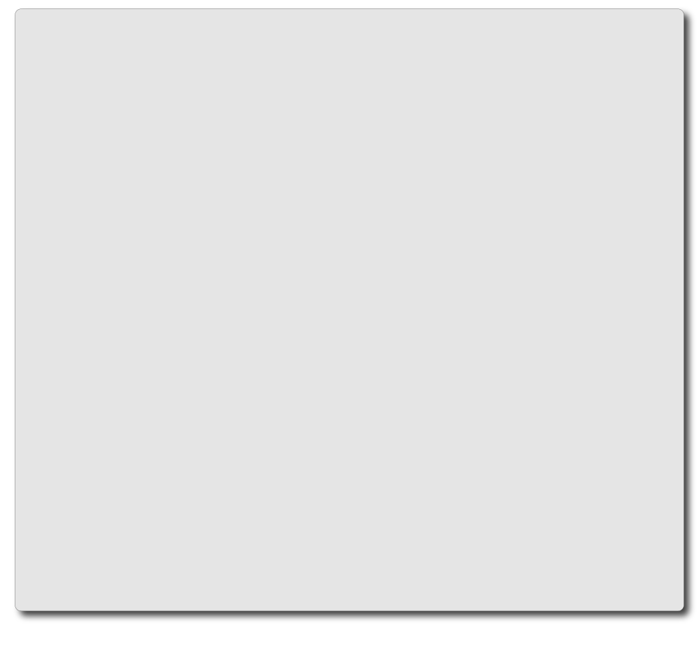
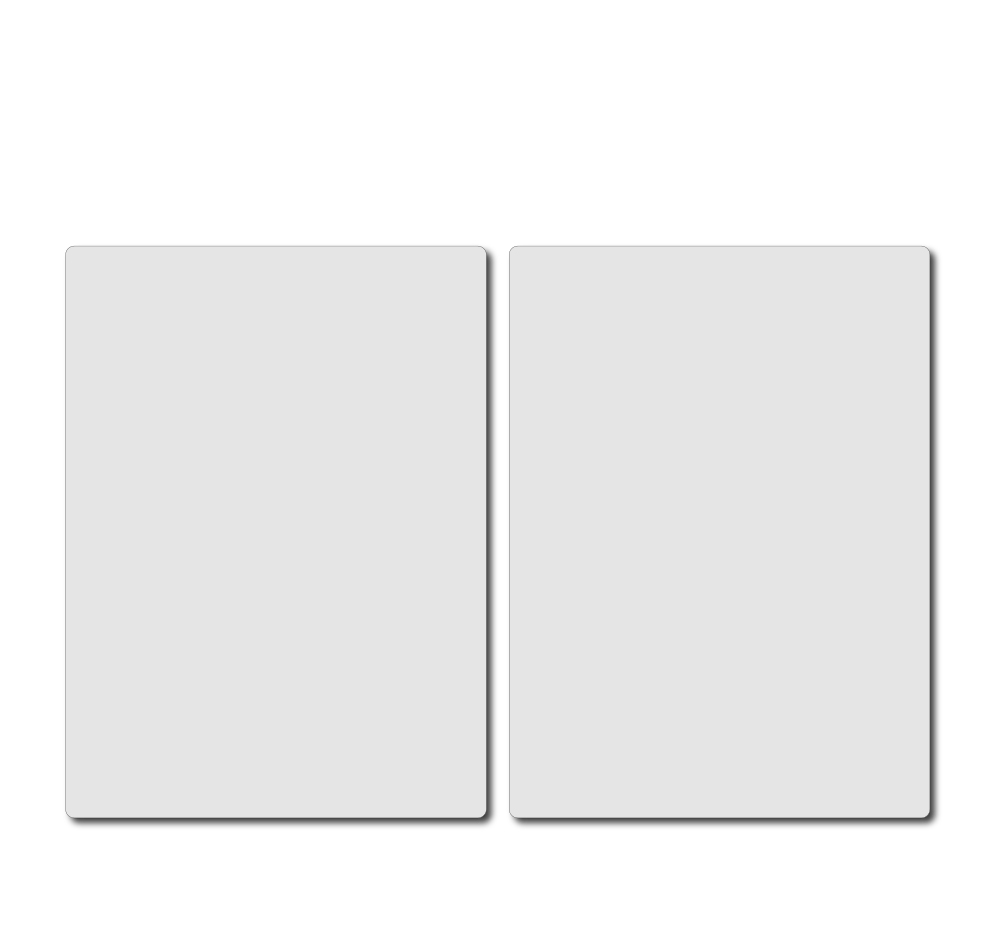
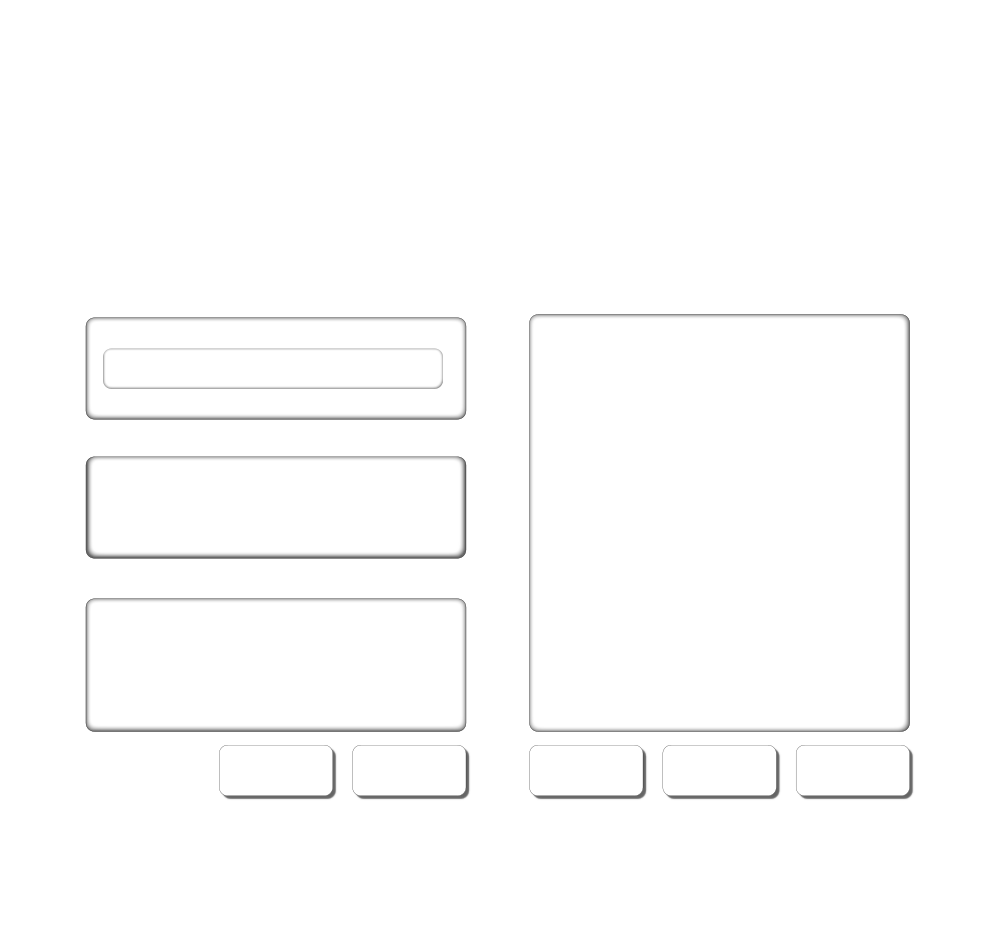

Statement Repair Kit
Artist statements often begin with vague sentences. Use this tool to recognise common weak phrases, find a stronger writing move, and rewrite the sentence so it belongs to your own work.



Artist statements often begin with vague sentences. Use this tool to recognise common weak phrases, find a stronger writing move, and rewrite the sentence so it belongs to your own work.


